slapen
to sleep
onregelmatigrang 528Body & healthgetekend
sliepheeft geslapen
- Scene
- one adult lies in a bed with the blanket pulled up to the shoulders, the head on a pillow, both eyes closed, the mouth relaxed and both arms outside the covers. The room is dim and a round alarm clock sits on a small bedside table.
- Must read
- closed eyes and the face at rest under the blanket.
- Avoid
- open eyes looking at the ceiling with the blanket flat (liggen); a person sitting up on the floor with the head on a table (zitten); wide open mouth and a hand over it (geeuwen); a person walking in pyjamas (lopen).
- Alt text
- Een volwassene ligt onder een deken tot de schouders, de ogen dicht en het gezicht rustig; naast het bed staat een wekker.
- Example
- De baby slaapt in de kamer.
The baby sleeps in the room.
slapen.png · rang 528 · A1 onregelmatig · lexicon woorden.tsv
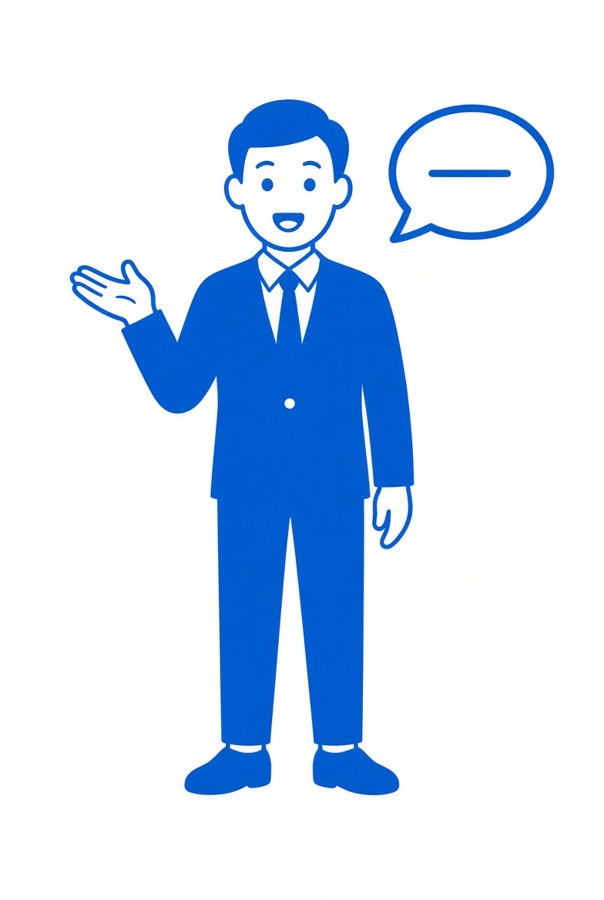
spreken
to speak
onregelmatigrang 563Communication & languagegetekend
sprakheeft gesproken
- Scene
- one adult stands facing the viewer with one hand raised to chest height, the palm turned up and the fingers spread, mouth open mid-word; the other hand rests at the side. A single bold speech bubble with a plain line inside floats beside the head, and no second person is in the picture.
- Must read
- one adult mid-word with a speech bubble, facing the viewer alone.
- Avoid
- a second person facing them, both with short bars in two bubbles (praten); two bubbles and one hand passing a box (vertellen); a phone at the ear (bellen); a row of listeners in chairs (luisteren); letters inside the bubble.
- Contrast
- Pair with zwijgen. Same adult: the mouth is open with a bubble above the head here, a finger lies across closed lips there.
- Alt text
- Een volwassene staat alleen voor de kijker met een open hand op borsthoogte en de mond open; naast het hoofd hangt een tekstballon.
- Example
- Zij spreekt goed Nederlands.
She speaks good Dutch.
spreken.png · rang 563 · A1 onregelmatig · lexicon woorden.tsv
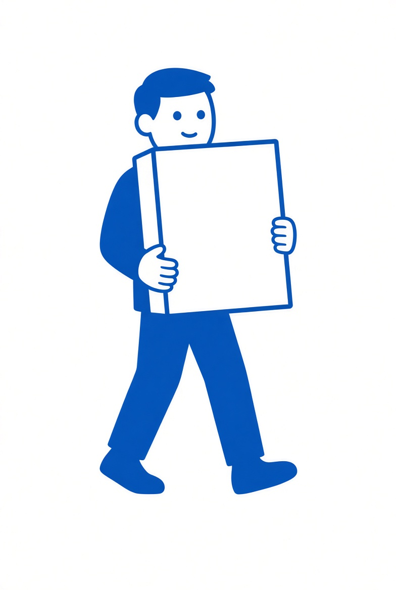
dragen
to carry
onregelmatigrang 586Movement & positiongetekend
droegheeft gedragen
- Scene
- one adult walks left to right carrying a tall cardboard box with both arms wrapped around it, the box pressed against the chest and high enough to hide the chin, the back leaning slightly away from the weight, the eyes peering over the top edge of the box.
- Must read
- both arms hugging a tall box against the chest while walking.
- Avoid
- a crate balanced on the head with both arms up (brengen); a box passing from hand to hand between two people (geven); an arm hanging down with a shopping bag in the fingers (houden); a person lifting a box off the floor (tillen).
- Alt text
- Een volwassene loopt met een hoge doos tegen de borst, de armen eromheen en de kin erachter verborgen.
- Example
- Zij draagt een zware doos naar boven.
She carries a heavy box upstairs.
dragen.png · rang 586 · A1 onregelmatig · lexicon woorden.tsv
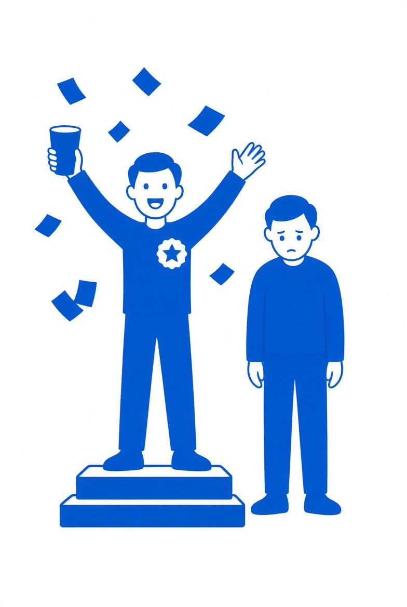
winnen
to win
onregelmatigrang 605Sport & gamesgetekend
wonheeft gewonnen
- Scene
- one adult stands on a low step with both arms raised in a V and an open mouth, a cup held high in one hand; a small rosette is pinned to the chest and pieces of paper fall around them. One other adult stands behind, looking down, arms hanging, holding nothing.
- Must read
- one adult with both arms up and a cup held high, a paper rosette on the chest.
- Avoid
- one adult alone holding up a key with a quiet smile (vinden); two people shaking hands at a table with coins on it (delen); a person running past a ribbon (rennen); a crowd and a stadium; a scoreboard with figures.
- Contrast
- Pair with verliezen. The end of a game, told by the body: the arms go up over the head here, the shoulders slump and the head drops there.
- Alt text
- Een volwassene steekt beide armen omhoog met een beker in een hand, een rozet op de borst en papieren snippers in de lucht.
- Example
- Ons team wint de wedstrijd.
Our team wins the match.
winnen.png · rang 605 · A1 onregelmatig · lexicon woorden.tsv

trekken
to pull
onregelmatigrang 641Movement & positiongetekend
trokheeft/is getrokken
- Scene
- one adult stands braced with both feet apart and leans back, both hands closed around a long rope that runs over the shoulder towards the right edge of the frame; the elbows bend, the rope is taut, and nothing is attached at the far end.
- Must read
- a taut rope taken in both hands with the body leaning back.
- Avoid
- a rope slack in one hand with both people close together (houden); a palm flat against a box and pushing it forward (duwen); a heavy box wrapped in both arms (dragen); a horse or a cart at the end of the rope; a winch.
- Contrast
- Pair with duwen. Same body and the same object line: the body leans away and the object comes towards it here, the body leans in and the object goes away there.
- Alt text
- Een volwassene staat schrap met beide voeten uit elkaar en houdt een strak touw met twee handen vast, het lichaam achterover.
- Example
- Ik trek aan het touw.
I pull on the rope.
trekken.png · rang 641 · A1 onregelmatig · lexicon woorden.tsv
geen beeld
begrijpen
to understand
onregelmatigrang 645Thought & knowledge
begreepheeft begrepen
- Scene
- one student sits at a plain desk with an open book, the head tilted up and both eyebrows lifted, one finger raised beside the temple, and a single lightbulb drawn above the head. The lightbulb is a convention for sudden understanding, allowed here because the verb is A1 and abstract.
- Must read
- a lightbulb above the head of a student who has one finger raised.
- Avoid
- a person scratching the head with a frown (denken); a student reading a book with a calm face (lezen); a person with a hand cupped behind the ear (horen); a question mark above the head (vragen); a teacher pointing at a board (uitleggen).
- Alt text
- Een leerling zit bij een bureau met een boek, een vinger omhoog, en boven het hoofd hangt een gloeilamp.
- Example
- Ik begrijp de som nu.
I understand the sum now.
begrijpen.png · rang 645 · A1 onregelmatig · lexicon woorden.tsv

sluiten
to close
onregelmatigrang 731Movement & positiongetekend
slootheeft gesloten
- Scene
- one adult faces a door from inside the room and pushes it shut with the flat of one hand on the door face, the other hand on the handle; the door is a hand width from its frame, with a dark sliver of the room beyond still showing and the person looking at the gap.
- Must read
- a door pushed nearly shut with a hand flat on it and a sliver of gap left.
- Avoid
- a person seen from behind stepping out through a doorway (verlaten); a key turned in a lock with a padlock visible (op slot doen); a hand held flat high on a barrier beside a round sign (mogen); a wide-open door with the frame empty.
- Contrast
- Pair with openen. Same door and the same flat palm: the gap narrows to a sliver here, it widens to a band of light there.
- Alt text
- Een volwassene duwt van binnen met een vlakke hand een deur dicht, met nog een smalle kier en het oog op die kier.
- Example
- De winkel sluit om zes uur.
The shop closes at six o'clock.
sluiten.png · rang 731 · A1 onregelmatig · lexicon woorden.tsv

verkopen
to sell
onregelmatigrang 764Money & tradegetekend
verkochtheeft verkocht
- Scene
- two full adults facing each other across a plain shop counter, both drawn head to feet. On the right the SELLER stands behind the counter in a plain apron with a large chunky cash register on the counter at the seller's side, and holds out a paper bag of apples with both hands across the counter towards the customer. On the left the CUSTOMER stands in front of the counter with a small shopping basket on one arm and the other hand at the side, empty. No banknote is in any hand. Above the head of the SELLER (the right person) floats one bold solid cobalt arrow pointing straight down at the head, with a clear white gap between arrow tip and hair; it marks who is performing the verb. The other person has no arrow. No text.
- Must read
- the seller, marked by the arrow, holding out a bag of apples across a counter to a customer; the cash register beside them.
- Avoid
- an arrow over the customer; the customer holding out a note (kopen); the bag already in the customer's hands; a note pushed across the counter (betalen); an empty stall with no person behind it (huren); two adults shaking hands (delen).
- Contrast
- Pair with kopen. Same two people at the same counter with the same cash register: the arrow marks the seller here, who holds out the bag; it marks the buyer there, who holds out the note.
- Alt text
- De persoon achter de toonbank, aangewezen met een pijl, houdt een zak appels naar een klant; ernaast een kassa.
- Example
- Hij wil zijn oude auto verkopen.
He wants to sell his old car.
verkopen.png · rang 764 · A1 onregelmatig · lexicon woorden.tsv

bekijken
to look at
onregelmatigrang 807Abstract & generalgetekend
bekeekheeft bekeken
- Scene
- one adult stands in front of a picture hanging on a wall and leans in with both hands behind the back and the eyes fixed on the frame; the picture shows two plain shapes. A second adult is not in the room, and no other object is in the frame.
- Must read
- one adult leaning towards a hanging framed picture, hands behind the back.
- Avoid
- two people facing each other with a bar above each head (praten); a leaflet held in two hands before the eyes (lezen); a hand behind an ear beside a radio (luisteren); a person with an eye to a microscope (onderzoeken).
- Alt text
- Iemand staat voor een ingelijste tekening en kijkt er voorover naar.
- Example
- Wij bekijken samen de huizen.
We look at the houses together.
bekijken.png · rang 807 · A1 onregelmatig · lexicon woorden.tsv
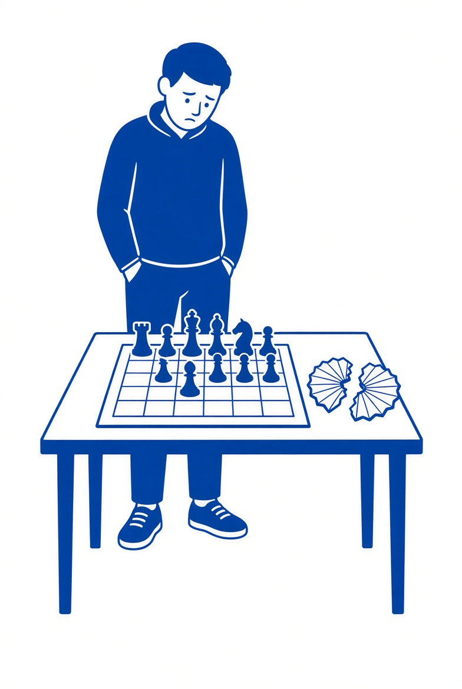
verliezen
to lose
onregelmatigrang 841Abstract & generalgetekend
verloorheeft/is verloren
- Scene
- one adult stands at a plain table with the shoulders slumped and the head low, both hands in the pockets, looking down at a small chessboard on the table where only black pieces stand; a folded paper rosette torn in two lies next to the board, and no other person is in the picture.
- Must read
- a slumped figure looking down at a chessboard with nothing of theirs left on it.
- Avoid
- one adult with both arms raised and a cup held high (winnen); a hand closing over a key on the ground (vinden); a person on their knees reaching under a sofa (zoeken); a purse with coins spilled on the floor (vallen).
- Contrast
- Pair with winnen. The end of a game, told by the body: the shoulders slump and the head drops here, the arms go up over the head there.
- Alt text
- Een volwassene staat met hangende schouders bij een schaakbord met alleen zwarte stukken en een gescheurd rozet ernaast.
- Example
- Hij verliest altijd zijn sleutels.
He always loses his keys.
verliezen.png · rang 841 · A1 onregelmatig · lexicon woorden.tsv
geen beeld
verliezen (sleutels)
to lose (an object)
onregelmatigrang 841Abstract & general
verloorheeft/is verloren
- Scene
- One adult stands in a street patting both empty coat pockets with wide eyes and an open mouth, alarmed. A little way behind them on the pavement a bunch of keys on a ring lies unnoticed. The adult is not looking at the keys.
- Must read
- empty pockets patted while keys lie unseen behind.
- Avoid
- two people at a chessboard, one tipping over a king (verliezen); keys left on a table while walking away (vergeten); a person kneeling to look under a sofa (zoeken); keys held up in triumph (vinden); a hand over the mouth.
- Alt text
- Een volwassene klopt in paniek op lege jaszakken terwijl achter hen op straat een bos sleutels ligt.
- Example
- Ik ben mijn sleutels weer kwijt, ik verlies alles.
I have lost my keys again, I lose everything.
verliezen-sleutels.png · rang 841 · A1 onregelmatig · lexicon woorden.tsv
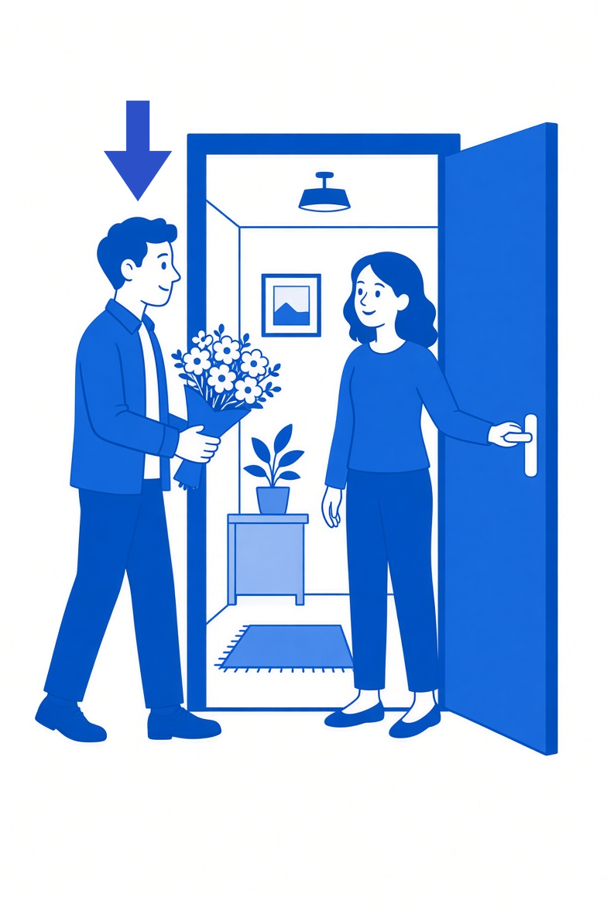
bezoeken
to visit
onregelmatigrang 938People & relationsgetekend
bezochtheeft bezocht
- Scene
- two adults stand in a doorway facing each other: the visitor steps in with a bunch of flowers held out in both hands, and the resident stands back with a hand on the open door and smiles. Behind the resident a lit room is visible, and the doorway frames both. Above the head of the VISITOR with the flowers floats one bold solid cobalt arrow pointing straight down at the head, with a clear white gap between arrow tip and hair; it marks who performs the verb. The other person has no arrow. No text.
- Must read
- a bunch of flowers held out in a doorway to a person who has the door open.
- Avoid
- a box carried away towards a closed door and laid down outside (brengen); one adult walking alone through an empty room (wonen); two adults at a market stall (kopen); a crowd of many people in a hall.
- Alt text
- Iemand stapt in de deuropening binnen met een bos bloemen voor een ander.
- Example
- Ik bezoek mijn opa in het ziekenhuis.
I visit my grandfather in the hospital.
bezoeken.png · rang 938 · A1 onregelmatig · lexicon woorden.tsv

zingen
to sing
onregelmatigrang 956Arts & mediagetekend
zongheeft gezongen
- Scene
- one adult stands in the middle of empty ground with the head slightly lifted and the mouth open, one hand pressed flat on the chest, the other stretched out to the side, eyes closed. A few bold curved lines spread from the open mouth, and no other person or object is in the picture.
- Must read
- an open mouth with curved lines spreading from it, one hand on the chest.
- Avoid
- a face bent double with a hand on the belly (lachen); a microphone at the mouth (spreken); a tall stand with a sheet of paper on it (lezen); a guitar or a piano; letters inside the curved lines.
- Alt text
- Een volwassene staat alleen met het hoofd iets geheven en de mond open; uit de mond waaieren een paar gebogen lijnen.
- Example
- Zij zingt een mooi lied.
She sings a beautiful song.
zingen.png · rang 956 · A1 onregelmatig · lexicon woorden.tsv

vliegen
to fly
onregelmatigrang 992Transport & travelgetekend
vloogheeft/is gevlogen
- Scene
- a small aeroplane in side view travels level across an empty sky, wings straight and nose slightly up, with two bold flat clouds below it and no ground in the picture; a pilot's head shows in the cockpit window.
- Must read
- an aeroplane in the air with clouds below it.
- Avoid
- a bird with both wings spread (fladderen); an aeroplane touching a runway (landen); a hot-air balloon leaving a field (stijgen); a person with both arms out jumping (springen); a jet trail across the sky.
- Contrast
- Pair with landen. Same aeroplane and the same sky: clouds sit far below the wings here, the wheels hang a finger's width above the runway there.
- Alt text
- Een klein toestel met vleugels gaat horizontaal door de lucht, boven twee platte wolken.
- Example
- De vogel vliegt over het huis.
The bird flies over the house.
vliegen.png · rang 992 · A1 onregelmatig · lexicon woorden.tsv
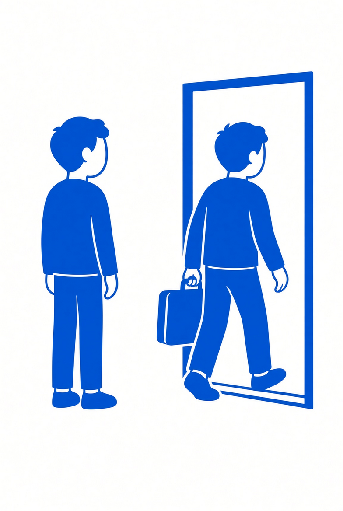
vertrekken
to depart
onregelmatigrang 1399Movement & positiongetekend
vertrokis vertrokken
- Scene
- one adult with a suitcase in one hand stands at the right edge of the frame, seen from behind, with the front foot already over the threshold of an open doorway, head turned away towards the empty road outside. A second adult stands still inside the room at the left, empty-handed, facing the back of the first.
- Must read
- one adult with a suitcase already stepping out through a doorway.
- Avoid
- one adult alone with arms swinging towards a shut door (gaan); a bicycle rolled out of a shed onto a street (fietsen); a fist raised against a second person (aanvallen); a hand raised flat on a door to shut it (sluiten); a train on a platform.
- Alt text
- Iemand met een koffer stapt door de open deur naar buiten; binnen blijft een ander staan.
- Example
- De trein vertrekt over vijf minuten.
The train departs in five minutes.
vertrekken.png · rang 1399 · A1 onregelmatig · lexicon woorden.tsv

vangen
to catch
onregelmatigrang 1670Movement & positiongetekend
vingheeft gevangen
- Scene
- one adult stands facing the viewer on a beach, full figure head to feet with a short ground line under the feet, both palms facing up with the fingers curled and the hands touching side by side a metre in front of the chest, a small round ball sitting inside the cupped hands and touching both palms (not above them), eyes on the ball; both feet stay planted flat on the sand.
- Must read
- a ball caught between two cupped hands on flat feet.
- Avoid
- one hand closing on a mug and lifting it off a shelf (pakken); a hand gripping another person by the wrist (redden); an outstretched arm with an open empty palm (vragen); a ball bouncing off the fingertips (spelen); a dog running after a stick (gooien).
- Contrast
- Pair with gooien. Same ball at the same height: it sits between two cupped hands here, it has just left one raised hand there.
- Alt text
- Iemand staat op het strand met de handen hol voor de borst, en de bal landt net tussen de handpalmen.
- Example
- De keeper kan de bal vangen.
The goalkeeper can catch the ball.
vangen.png · rang 1670 · A1 onregelmatig · lexicon woorden.tsv
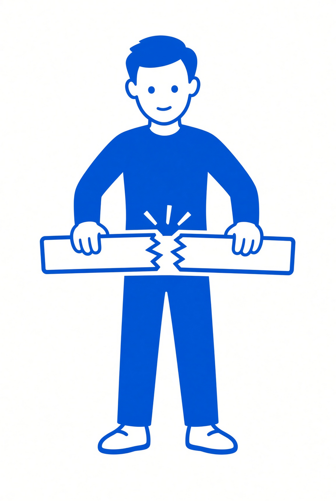
breken
to break
onregelmatigrang 1698Abstract & generalgetekend
brakheeft gebroken
- Scene
- one adult stands with both hands resting on the top of a long flat wooden plank held out in front, the two halves already dropping away from each other at a jagged line at its middle, a few short splinters in the air; the eyes are down on the break. Everything is cobalt outline only: the plank is a plain blank white bar with a bold cobalt outline, with no ticks, numbers, lines or notches anywhere on it, even along its edges; the splinters are short cobalt strokes; no beige, tan or wood-coloured fill.
- Must read
- a long plank snapping in two under two hands.
- Avoid
- a mug already in pieces on the floor (vallen); a screwdriver in a screw (gebruiken); a hammer and a nail (maken); a hand patting a torn cloth (repareren); a wall of bricks on the ground (bouwen).
- Alt text
- Iemand houdt twee handen op een lange lat die in het midden knapt, met splinters in de lucht.
- Example
- Pas op, dan breek je het glas.
Be careful, or you will break the glass.
breken.png · rang 1698 · A1 onregelmatig · lexicon woorden.tsv

springen
to jump
onregelmatigrang 1722Movement & positiongetekend
sprongheeft/is gesprongen
- Scene
- one adult is caught in mid-air over bare ground, seen from the side, full figure, torso upright and leaning slightly forward, thighs forward with the shins tucked up under the body, both arms swung back behind; a clear ground line is drawn well below the feet, the feet well clear of the ground and the figure fully detached from it, eyes on something ahead of the landing spot.
- Must read
- a whole person in the air with both feet well above the ground.
- Avoid
- the front foot flat and the back on its toes with arms swinging (lopen); a body tipping sideways with both arms flung out (vallen); two adults hopping in a line (dansen); a swimmer over a pool (duiken); a trampoline (stuiteren); a shadow on the ground (vallen).
- Contrast
- Pair with vallen. Same adult off the ground: the knees come up under the body here, the body tips forward with the arms flung out there.
- Alt text
- Iemand is met opgetrokken knieen in de lucht, de voeten hoog boven de grond en de armen naar achteren.
- Example
- De kinderen springen in het water.
The children jump into the water.
springen.png · rang 1722 · A1 onregelmatig · lexicon woorden.tsv
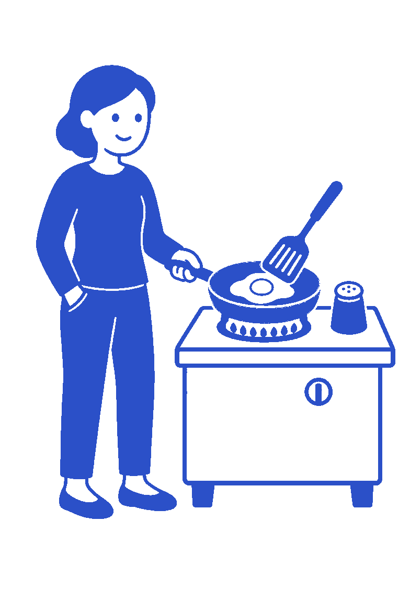
bakken (ei)
to fry
onregelmatigrang 2510Food & drinkgetekend
bakteheeft gebakken
- Scene
- One adult stands at a lit hob, one hand on the handle of a shallow frying pan. In the pan a single egg fries, the white set and the yolk soft, and a spatula rests on the rim. A dish of salt stands on the counter. Nothing else in the picture.
- Must read
- a single egg frying in a pan on a lit hob.
- Avoid
- a tin of batter going into an open oven (bakken); a pot on a lit stove with a spoon (koken); a hand turning a knife through a carrot on a board (snijden); a closed pan with the lid on (stomen); a plate of eggs already served (serveren).
- Alt text
- Een volwassene houdt een pan met een spiegelei boven een brandende pit, de dooier is nog zacht.
- Example
- Ik bak een ei in de pan.
I fry an egg in the pan.
bakken-ei.png · rang 2510 · A1 onregelmatig · lexicon woorden.tsv
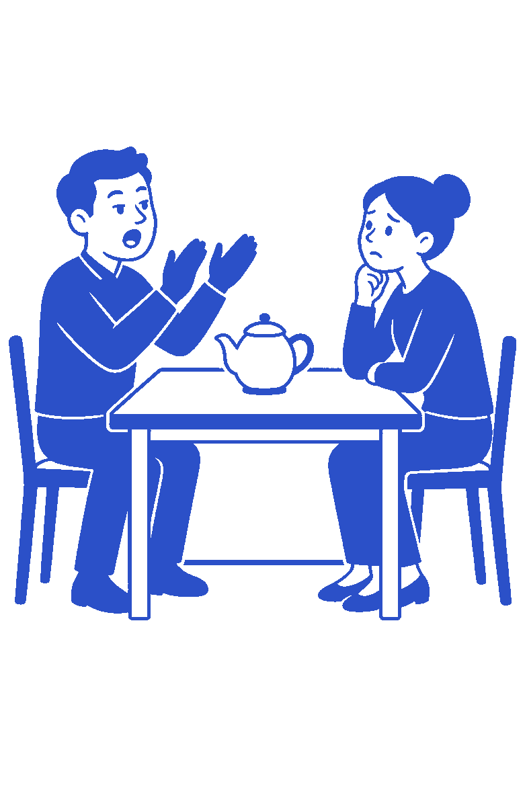
beschrijven
to describe
onregelmatigrang 2554Communication & languagegetekend
beschreefheeft beschreven
- Scene
- one adult sits at a table facing a listener and draws the shape of an object in the air with both hands, mouth open mid-sentence, eyes narrowed in effort; on the table between them stands a teapot. The listener leans in with a puzzled face and looks at the hands.
- Must read
- puzzled listener watching two hands draw a shape in the air.
- Avoid
- a pencil on paper or an easel (tekenen); a chisel pressed to a block of wood (beeldhouwen); a tape measure along a plank (meten); a trophy held up in both hands (presenteren); two adults with speech bubbles (praten).
- Alt text
- Iemand zit aan een tafel en tekent met beide handen een vorm in de lucht; de luisteraar kijkt verbaasd.
- Example
- Kun je de man voor de politie beschrijven?
Can you describe the man for the police?
beschrijven.png · rang 2554 · A1 onregelmatig · lexicon woorden.tsv
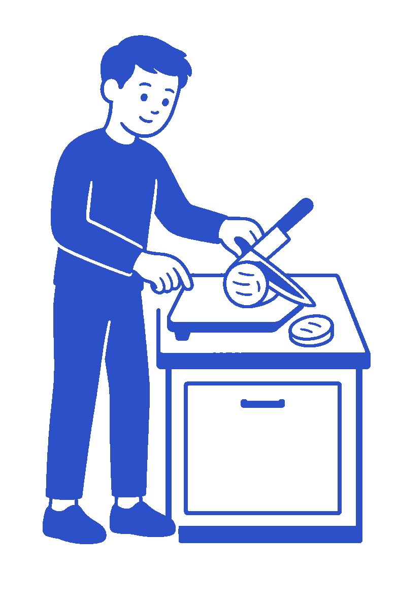
snijden
to cut, to slice
onregelmatigrang 2685Food & drinkgetekend
sneedheeft gesneden
- Scene
- One adult stands at a kitchen counter and presses a knife down through a round carrot on a wooden board, the blade already half through and one thick slice lying free to the side; the other hand curls its fingers back out of the blade's path and both eyes are on the knife.
- Must read
- a knife halfway through a carrot with one slice already free.
- Avoid
- a hand pushing a tin into an open oven (bakken); a pot with a wooden spoon on a lit stove (koken); a knife held up flat with nothing under it (hebben); a fork lifting food to an open mouth (eten).
- Alt text
- Een volwassene drukt een mes door een wortel op een plank; één schijfje ligt er al naast.
- Example
- Ik snijd de kaas met een scherp mes.
I cut the cheese with a sharp knife.
snijden.png · rang 2685 · A1 onregelmatig · lexicon woorden.tsv
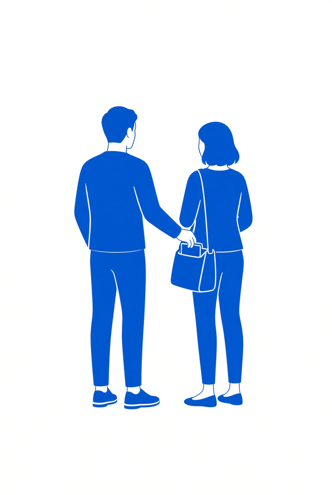
stelen
to steal
onregelmatigrang 2724Character & behaviourgetekend
stalheeft gestolen
- Scene
- two adults stand side by side seen from behind, full figures head to feet; the second carries a bag open at the hip and the first person's hand is inside the open bag pulling out a small wallet shape, while the first person looks straight ahead; nothing else.
- Must read
- a hand sliding a small wallet out of a stranger's open bag.
- Avoid
- a banknote and an apple bag crossing on a shop counter (kopen); a box held out towards another person (geven); an open hand closing round a mug on a shelf (pakken); a box dropped on the floor and a shopkeeper shouting.
- Alt text
- Een hand haalt een klein portemonneetje uit de open tas van iemand anders.
- Example
- Iemand heeft mijn fiets voor het station gestolen.
Someone stole my bike in front of the station.
stelen.png · rang 2724 · A1 onregelmatig · lexicon woorden.tsv
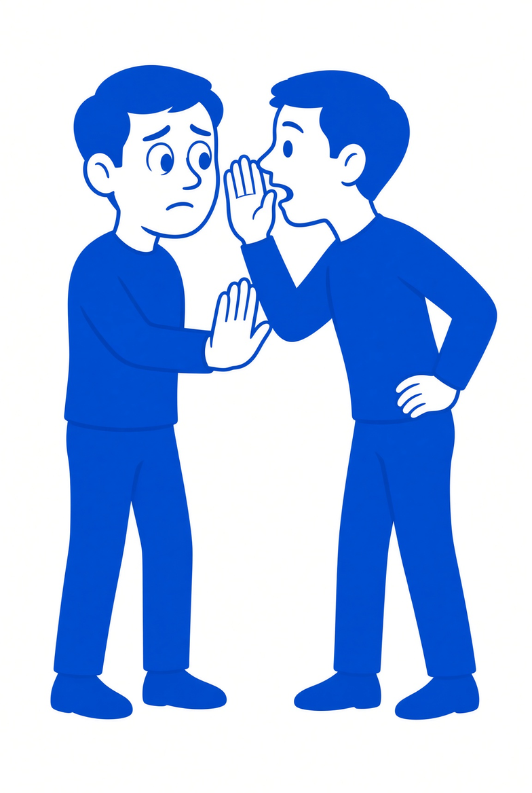
verstaan
to understand (what is said)
onregelmatigrang 3035Thought & knowledgegetekend
verstondheeft verstaan
- Scene
- one adult turns an ear towards a second adult who speaks close by with a hand cupped to the mouth; the first adult nods slowly with a frown of effort and holds one hand up flat, as if to slow the other down. Between them nothing else stands. The listener's eyes are wide open and looking at the speaker's mouth, the head is turned sideways to present an ear, with a frown on the brow and one flat hand raised.
- Must read
- a flat hand held up to slow a speaker who stands close by.
- Avoid
- a person with a hand behind an ear beside a radio (horen); a written page being read (lezen); a person asleep with closed eyes; two people looking at each other with no gesture between them (kijken).
- Alt text
- Iemand buigt het oor naar een spreker dichtbij en houdt een hand op als teken om te wachten.
- Example
- Ik kan je door het lawaai niet verstaan.
I cannot understand you because of the noise.
verstaan.png · rang 3035 · A1 onregelmatig · lexicon woorden.tsv
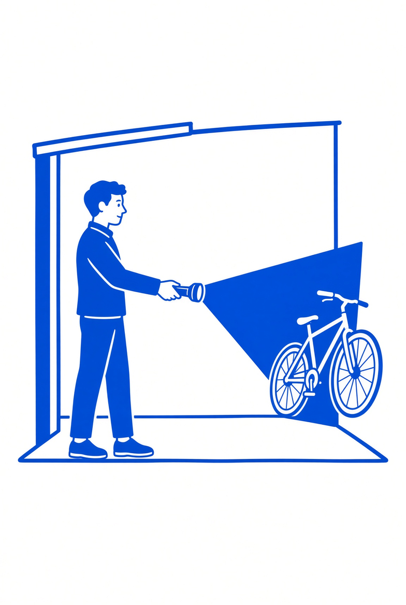
schijnen
to shine
onregelmatigrang 3438Abstract & generalgetekend
scheenheeft geschenen
- Scene
- one adult stands in a dark shed and holds a torch out at arm's length, its beam a wide bold cone falling on a bicycle leaning against the far wall; the shed is drawn solid dark and only the lit patch shows detail. The shed is drawn only as a bold cobalt outline on white with no fill and no second tone; the beam is a solid cobalt cone landing on the bicycle, and the bicycle is drawn in white with cobalt lines.
- Must read
- a torch beam falling on an object in the dark.
- Avoid
- a hand on a wall switch (aandoen); a lamp on a table beside a reader (lezen); the sun in the sky; a torch swept over the floor with the body bent low (zoeken); a phone screen held to the face (bellen).
- Alt text
- In een donkere schuur houdt iemand een zaklamp gestrekt; de lichtbundel valt op een fiets.
- Example
- De zon schijnt vandaag de hele dag.
The sun is shining all day today.
schijnen.png · rang 3438 · A1 onregelmatig · lexicon woorden.tsv
geen beeld
schijnen (zon)
to shine (sun)
onregelmatigrang 3438Abstract & general
scheenheeft geschenen
- Scene
- A large round sun with straight rays sits in a clear sky above a grass lawn with one bench. There is no person in this picture, only the sun, its rays falling on the lawn and bench, and a few short shadows. No text, no clouds, no numbers.
- Must read
- a bright round sun with rays falling on a lawn.
- Avoid
- a person holding a torch beam on a wall (schijnen); a sun hidden behind rain clouds (regenen); a person sweating with a fan (zweten); a sun low over the sea at dusk (ondergaan); a thermometer.
- Alt text
- Een grote ronde zon met rechte stralen staat boven een grasveld met een bank; er is niemand te zien.
- Example
- Vandaag schijnt de zon de hele dag.
Today the sun shines all day.
schijnen-zon.png · rang 3438 · A1 onregelmatig · lexicon woorden.tsv